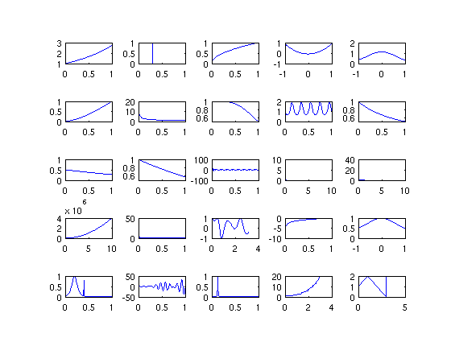
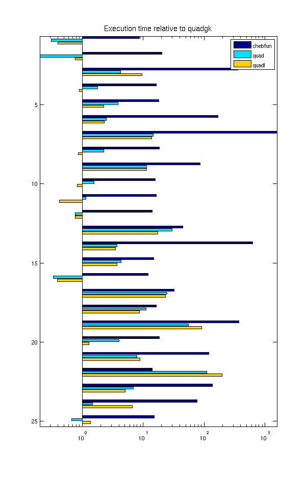
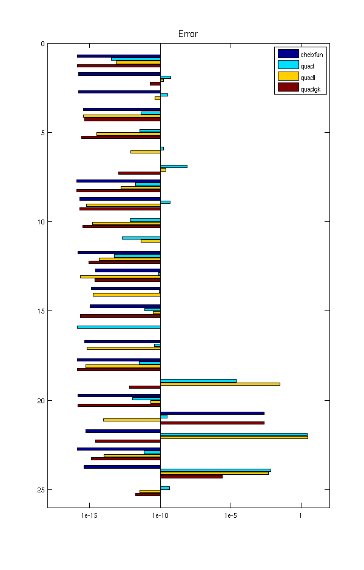
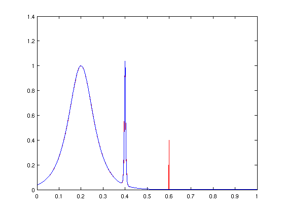

Battery test of Chebfun as an integrator
Pedro Gonnet, September 2010
(Chebfun example quad/BatteryTest.m)
This Example gives an idea of how Chebfun performs as a general-purpose integrator. We apply it to the set of test functions considered by Kahaner [1], Gander & Gautschi [2], and Gonnet [3]:
funs = {
@(x) exp(x)
@(x) double( x >= 0.3 )
@(x) sqrt(x)
@(x) (23/25) * cosh(x) - cos(x)
@(x) 1 ./ (x.^4 + x.^2 + 0.9)
@(x) sqrt( x.^3 )
@(x) 1 ./ sqrt(x)
@(x) 1 ./ (1 + x.^4)
@(x) 2 ./ (2 + sin(10*pi*x))
@(x) 1 ./ (1 + x)
@(x) 1 ./ (1 + exp(x))
@(x) x ./ (exp(x) - 1)
@(x) sin(100 * pi * x) ./ (pi * x)
@(x) sqrt(50) * exp(-50*pi*x.^2)
@(x) 25 * exp(-25*x)
@(x) 50 / pi * (2500 * x.^2 + 1)
@(x) 50 * (sin(50*pi*x) ./ (50*pi*x)).^2
@(x) cos( cos(x) + 3*sin(x) + 2*cos(2*x) + 3*sin(2*x) + 3*cos(3*x) )
@(x) log(x)
@(x) 1 ./ (x.^2 + 1.005)
@(x) 1 ./ cosh( 10 * (x - 0.2) * 2 ) + ...
1 ./ cosh( 100 * (x - 0.4) * 4 ) + ...
1 ./ cosh( 1000 * (x - 0.6) * 8 )
@(x) 4 * pi^2 * x .* sin(20*pi*x) .* cos(2*pi*x)
@(x) 1 ./ (1 + (230*x - 30).^2)
@(x) floor(exp(x))
@(x) (x < 1) .* (x + 1) + ...
(1 <= x & x <= 3) .* (3 - x) + ...
(x > 3) * 2
};
The intervals of integration are these:
ranges = [ 0 1 ; 0 1 ; 0 1 ; -1 1 ; -1 1 ; 0 1 ; 0 1 ; 0 1 ; 0 1 ; ... 0 1 ; 0 1 ; 0 1 ; 0 1 ; 0 10 ; 0 10 ; 0 10 ; 0 1 ; 0 pi ; ... 0 1 ; -1 1 ; 0 1 ; 0 1 ; 0 1 ; 0 3 ; 0 5 ];
The exact values (computed with Maple) are these:
f_exact = [ 1.7182818284590452354 , 0.7 , 2/3 , 0.4794282266888016674 , ... 1.5822329637296729331 , 0.4 , 2 , 0.86697298733991103757 , ... 1.1547005383792515290 , 0.69314718055994530942 , 0.3798854930417224753 , ... 0.77750463411224827640 , 0.49898680869304550249 , ... 0.5 , 1 , 0.13263071079267703209e+08 , 0.49898680869304550249 , ... 0.83867634269442961454 , -1 , 1.5643964440690497731 , ... 0.16349494301863722618 , -0.63466518254339257343 , ... 0.013492485649467772692 , 17.664383539246514971 , 7.5 ];
To get an idea of what it is we are integrating, we plot the different integrands:
clf for i = 1:length(funs) xx = linspace( ranges(i,1) , ranges(i,2) , 200 ); subplot(5,5,i), plot( xx , funs{i}(xx) ) end
We now create and fill two arrays with the relative errors and times used for each quadrature routine and each function integrated to a relative tolerance of 1e-10. We create the chebfuns with splitting and blowup on to account for difficult and singular integrands. (For more accurate timing results one could perform each integration, say, 10 times by setting runs=10.)
errs = zeros(25,4); time = zeros(25,4); runs = 1; tol = 1e-10; for i = 1:length(funs) % Chebfun tic for k = 1:runs q = sum( chebfun( funs{i} , ranges(i,:) , ... 'splitting' , 'on' , 'blowup' , 'on' ) ); end time(i,1) = toc/runs; errs(i,1) = abs( ( q-f_exact(i) ) / f_exact(i) ); % quad tic for k = 1:runs q = quad( funs{i} , ranges(i,1) , ranges(i,2) , tol*f_exact(i) ); end time(i,2) = toc/runs; errs(i,2) = abs( ( q-f_exact(i) ) / f_exact(i) ); % quadl tic for k=1:runs q = quadl( funs{i} , ranges(i,1) , ranges(i,2) , tol*f_exact(i) ); end; time(i,3) = toc/runs; errs(i,3) = abs( ( q-f_exact(i) ) / f_exact(i) ); % quadgk tic for k=1:runs q = quadgk( funs{i} , ranges(i,1) , ranges(i,2) , 'RelTol' , tol ); end time(i,4) = toc/runs; errs(i,4) = abs( ( q-f_exact(i) ) / f_exact(i) ); end
Warning: Maximum function count exceeded; singularity likely. Warning: Maximum function count exceeded; singularity likely. Warning: Maximum function count exceeded; singularity likely. Warning: Maximum function count exceeded; singularity likely.
To give an idea of how the algorithms compare, we plot both the times and the achieved accuracies in bar charts. First, consider the execution times. The chart scales these relative to the time required by quadgk. What we see here is that quad and quadl are typically about 10 times slower than quadgk, and Chebfun is typically about 10 times slower than quad and quadl.
clf barh( time ./ (time(:,4)*ones(1,4) ) ) FS = 'fontsize'; title('Execution time relative to quadgk',FS,14) legend('chebfun','quad','quadl'), axis tight set(gca,'XScale','log','YDir','reverse') scrsz = get(0,'ScreenSize'); set(gcf,'position',[0 0 600 scrsz(4)])
Now look at accuracies. The plot shows relative errors scaled to the required tolerance of 1e-10. Here we see that quad sometimes does better and sometimes worse than prescribed; quadl and quadgk usually do better; and Chebfun, which is working in its default mode, usually gets close to machine precision.
clf barh( errs / 1e-10 ) title('Error',FS,14) legend('chebfun','quad','quadl','quadgk') axis([1e-8 1e12 0 26]) set(gca,'XScale','log','YDir','reverse') set(gcf,'position',[0 0 600 scrsz(4)]) set(gca,'xtick',10.^(-5:5:10)) set(gca,'xticklabel',{'1e-15','1e-10','1e-5','1'})
Chebfun fails in one case: the 21st function. To see what went wrong in that case, we plot the function and its chebfun:
close
xx = linspace(ranges(21,1),ranges(21,2),1023)';
plot( xx , funs{21}(xx) , '-r' )
hold on, plot( chebfun( funs{21} , ranges(21,:) , ...
'splitting' , 'on' , 'blowup' , 'on' ) ), hold off
 Evidently Chebfun missed the third spike at x=0.6. This can be fixed by increasing minsamples:
q = sum( chebfun( funs{21} , ranges(21,:), ...
'splitting' , 'on' , 'blowup' , 'on' , 'minsamples', 65) );
abs( ( q - f_exact(21) ) / f_exact(21) )
ans =
3.395282459894185e-16
References :
[1] David K. Kahaner, "Comparison of numerical quadrature formulas," in Mathematical Software, John R. Rice, ed., Academic Press, 1971, pp. 229-259.
[2] Walter Gander & Walter Gautschi, "Adaptive quadrature -- revisited", BIT Numerical Mathematics, 40(1):84-101, 2000.
[3] Pedro Gonnet, "Increasing the reliability of adaptive quadrature using explicit interpolants", ACM Transactions on Mathematical Software, 37(3):26:1--26:32, 2010.